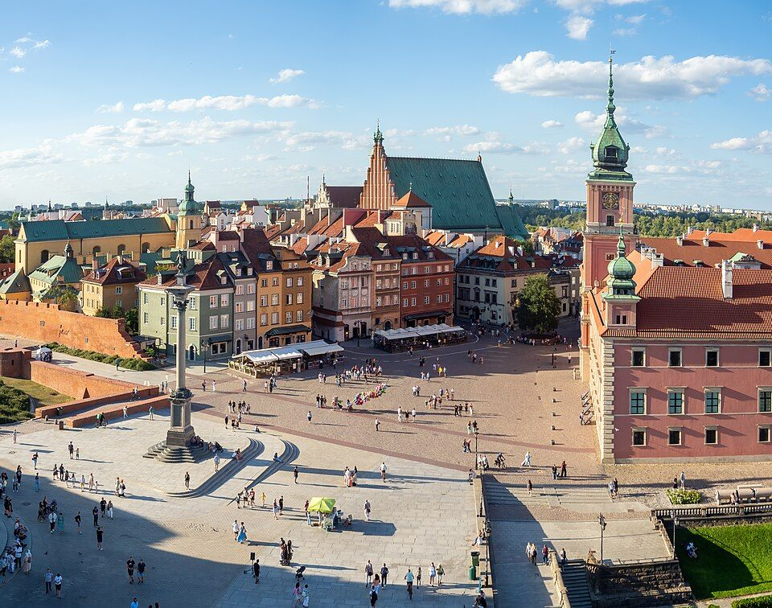
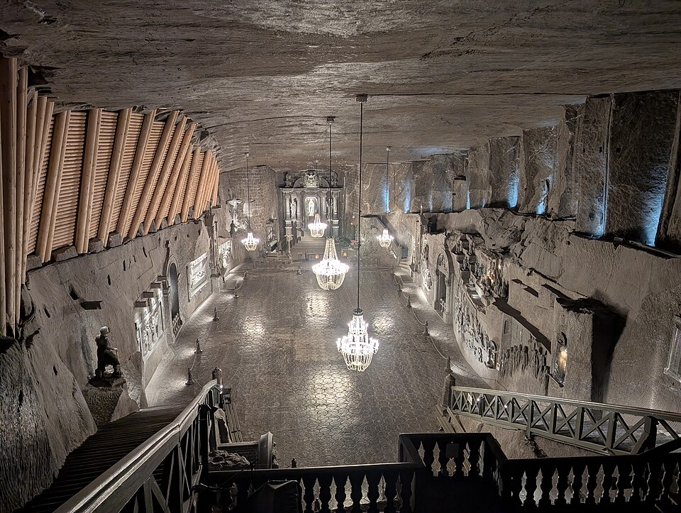
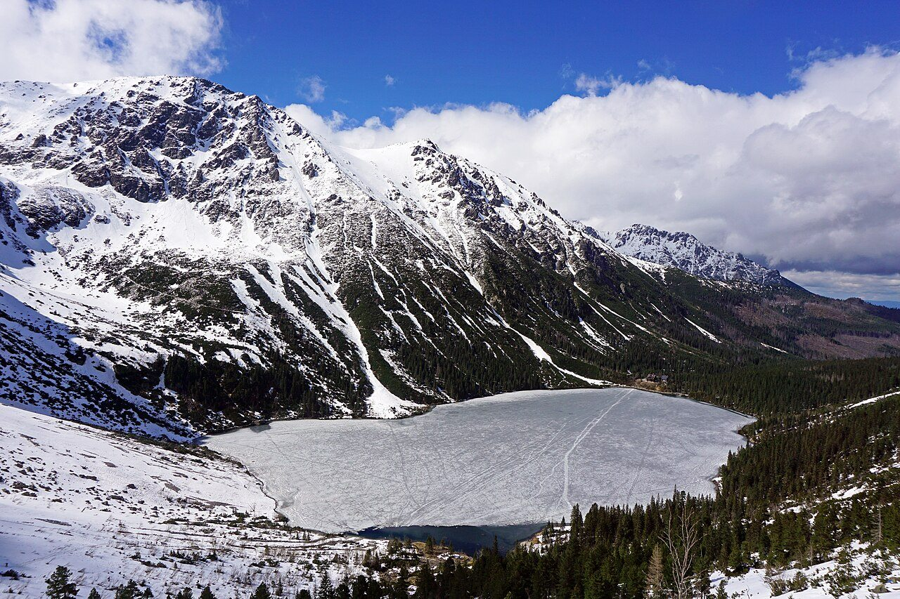
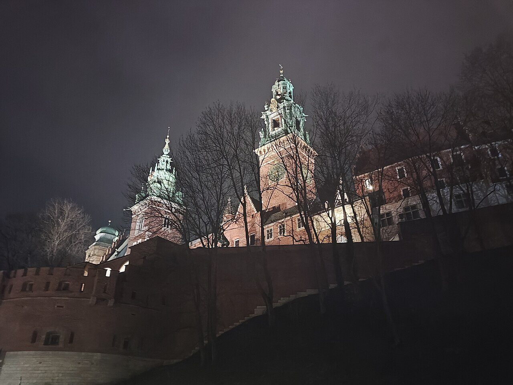

Poland폴란드 Polska
오래된 도시와 새로운 산업이 나란히 자라는 곳
- Capital
- 바르샤바 (Warszawa)
- Language
- 폴란드어
- Currency
- 즈워티 (PLN)

바르샤바 왕궁광장Castle Square, Warsaw
비엘리치카 소금광산 킹가 예배당St. Kinga's Chapel, Wieliczka Salt Mine
겨울의 모르스키에 오코Morskie Oko in winter, Tatras
크라쿠프 바벨성 야경Wawel Castle by night, KrakówExplore Poland
폴란드 더 알아보기
폴란드는 발트해에서 카르파티아산맥까지 이어지는 넓은 영토를 가진 중동부 유럽의 국가다. 수도 바르샤바에서는 전쟁 후 재건된 구시가지와 현대적 업무지구를 함께 볼 수 있고, 크라쿠프에서는 중세 도시 구조가 남아 있는 광장과 건축물을 만날 수 있다. 피에로기 같은 가정식, 쇼팽의 음악, 자동차·ICT 산업까지 서로 다른 이야기가 공존한다.
- 개요Overview처음 보는 폴란드, 기본 정보, 지리와 주변국, 역사를 이해하는 7개 장면
- 관광Travel직항·추천 시기·축제·물가·교통 정보와 명소 9곳
- 음식Food피에로기, 주레크, 비고스, 고웡프키, 코틀레트 스하보비 등 9가지
- 언어Language폴란드어는 어떤 언어일까?, 폴란드어 알파벳: 32자 + 국제음성기호(IPA), 알파벳과 별도로 배워야 하는 철자 묶음, 인사말과 기본 소통 (초보 1단계)
- 문화Culture폴란드 문화 한눈에 보기, 주요 문화 주제 10개, 자주 묻는 질문
- 산업Industry경제·산업 프로필, 주요 산업 7개, 지역별 산업 특화: 초보자가 읽는 산업 지도, 2025년 PAIH 투자지원 프로젝트 데이터 읽기


Latest updates
폴란드 최근 뉴스
-
폴란드 남동부에 미확인 물체 추락…투스크 총리 ‘영공 침범’ 발표
노츠프롬폴란드에 따르면 러시아의 우크라이나 서부 공격이 이어지던 20일 오전, 우크라이나 국경에서 약 60km 떨어진 노비 리포비에츠 마을 들판에 미확인 물체가 떨어졌습니다. 건물에서 수백 미터 떨어진 곳이며 부상자는 보고되지 않았습니다.
-
폴란드 헌법재판소, 재판장 면책특권 박탈…검찰 기소 길 열려
노츠프롬폴란드에 따르면 재판소를 장악한 판사 8명은 18일 주레크 검찰총장 겸 법무장관의 요청을 받아들여 슈비엥츠코프스키 재판장과 소하뇨스키 부재판장의 면책특권을 박탈했습니다. 다만 체포와 구금에는 동의하지 않았습니다.
-
폴란드 중앙은행, 헌법재판소 계좌 이체 동결…지도부 분쟁 격화
노츠프롬폴란드에 따르면 폴란드 중앙은행(NBP)은 16일 서로 상충하는 서류가 제출됐다며 헌법재판소 계좌의 출금 이체를 동결했고, 재판소를 누가 통제할지 결정할 권한이 없다고 밝혔습니다.